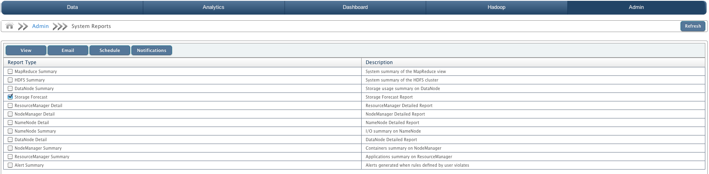
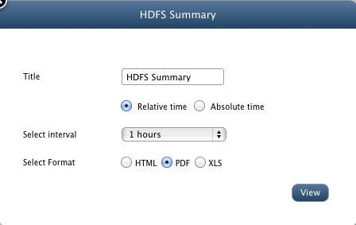
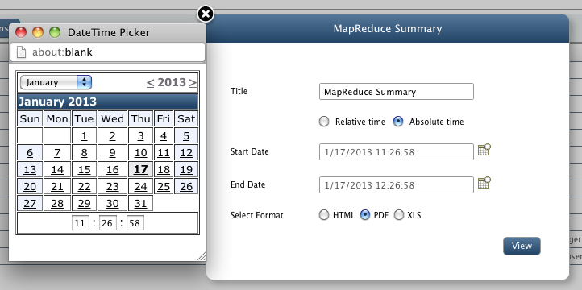
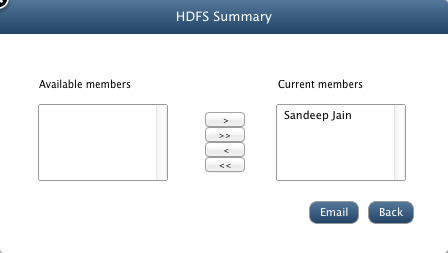
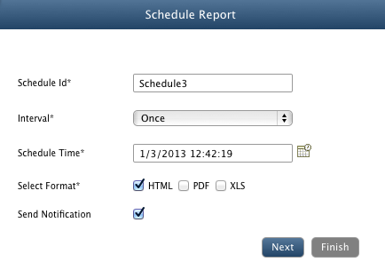

System Reports
In this chapter
QueryIO allows you to have all the summary and details of the system to be exported to your system in form of Reports.
Reports can be exported in various formats like HTML, PDF or XLS.

Types of Reports
Various reports that can be exported are:
| Report Type |
Description |
| MapReduce Summary |
System summary of the MapReduce view. |
| HDFS Summary |
System summary of the HDFS cluster. |
| DataNode Summary |
Storage usage summary on DataNode. |
| Storage Forecast |
Storage forecast description. It basically forecasts in how much time you might run out of storage space. |
| ResourceManager Detail |
ResourceManager Detailed Report |
| NodeManager Detail |
NodeManager Detailed Report |
| NameNode Details |
NameNode detailed report. |
| NameNode Summary |
I/O transaction summary on NameNode. |
| DataNode Details |
DataNode detailed report. |
| NodeManager Summary |
Containers summary on NodeManager. |
| ResourceManager Summary |
Applications summary on ResourceManager. |
| Alert Summary |
A rule configured to belong to certain bounds. When any bound is violated, an alert is generated. It gives summary of all alerts generated. |
NOTE: To email or schedule a report, you need to first configure Notifications settings.
How to generate a Report
To generate a new report, select the check box against the type of report you want to generate and then click on View button.
- Title: You can change the title of the report.
- Relative Time: If Relative Time option is selected, then select the time period for which report will be generated from the drop down list.

- Absolute Time: If this option is selected, then specify the time period for the report to be generated by selecting Start Date and End Date from the DateTime Picker.

- Format: Now select the format for the report to be generated. You can select from the options: HTML, PDF or XLS.
- Finally click on View button to view or download report in specific format.
How to email a Report
To email a new report, select the check box against the type of report you want to email and then click on Email button.
- Title: Select the title for the report.
- Select the time interval for Relative time option or time period for Absolute time option.
- Format: Select format of the report from HTML, PDF, XLS.
- Now click on Next button.
- Next screen will display a list of Available users which are the registered users of QueryIO.
- Select the user you want to email and add them to Selected users list by clicking on ">" button.
- To remove a user from Current Members list, select the user and click on "<" button.
- To add all the available users to current member list, click on ">>" button and for vice versa, click "<<" button.

- Click on Email button to email report or click on Back button to change previous settings.
- Your report will be mailed.
How to schedule a Report
To make a schedule for the report, select the check box against the type of report you want to schedule and then click on Schedule button.
- Schedule Id: Enter a schedule id.
- Interval: Select the frequency of notification to be repeated. You can select from once, twelve hours, daily, weekly options in interval drop down list.
- Schedule Time: Select schedule time.
- Select Format: Select the format in which report will be generated.(HTML, PDF, XLS)
- Send Notification: Select check box if you want to receive notification.
- If Send Notification is checked:
- Notification Type: Select from "Email" or "Log".
- Message : Provide message for to be included in notification.
- Select from the available registered users to send notification (only for Email notification).
- Click Finish

Notifications
To email or schedule a report, you need to first configure Notifications settings.
Copyright © 2015 QueryIO Corporation. All Rights Reserved.
QueryIO, "Big Data Intelligence" and the QueryIO Logo are trademarks
of QueryIO Corporation. Apache, Hadoop and HDFS are trademarks of The Apache Software Foundation.